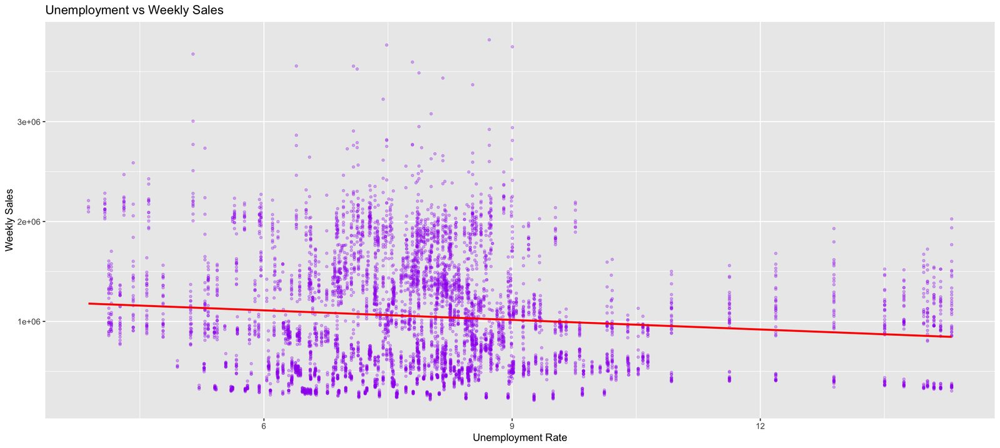
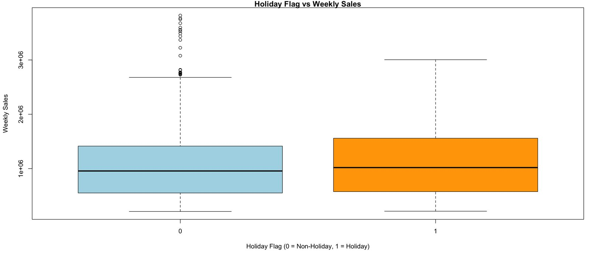
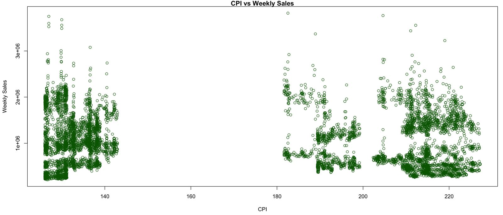
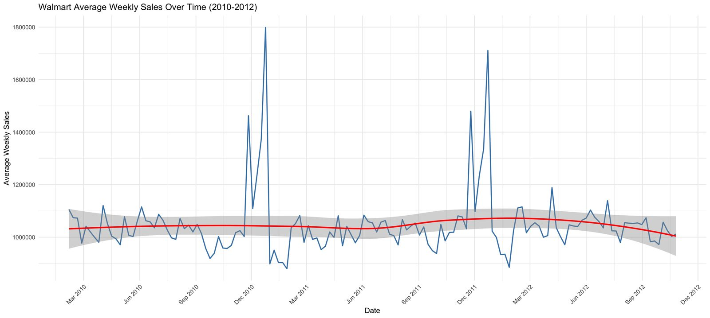
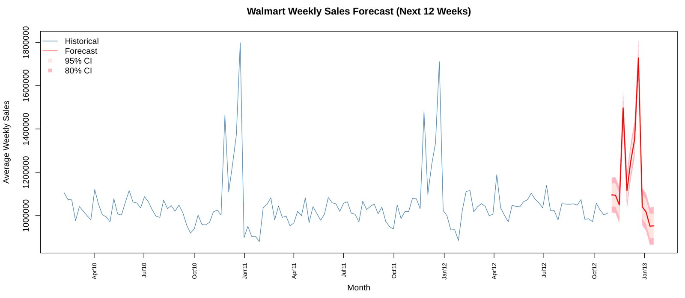
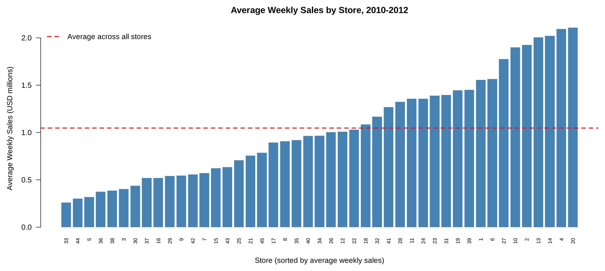

Walmart Retail Sales Analysis
Which economic and seasonal factors relate to weekly sales at 45 Walmart stores from 2010 to 2012?
- Unemployment had the strongest link with weekly sales: each 1-point rise went with about $42.5K less per store per week. Holiday weeks went with about $84.4K more.
- The economic factors together explain only about 2.5% of weekly sales. Adding Store to the model raises this to about 92%.
- The 12-week forecast repeats the holiday peak: about $1.73M in the week before Christmas, then back to about $950K in January.
The question
Retail sales move with the economy and the calendar. I wanted to test which of five outside factors had a measurable relationship with a store's weekly sales: temperature, fuel price, the Consumer Price Index (CPI), the unemployment rate, and whether the week included a holiday.
The work had four parts: association tests for each factor, three linear regression models compared side by side, Lasso and Ridge regression as a check on the full model, and an ARIMA model to forecast the next 12 weeks.
Data
The Walmart Store Sales dataset from Kaggle has one row per store per week.
| Variable | What it measures |
|---|---|
| Weekly_Sales | Store revenue for the week in USD (the response variable) |
| Holiday_Flag | 1 if the week includes a holiday (Super Bowl, Labor Day, Thanksgiving, or Christmas), otherwise 0 |
| Temperature | Average temperature in the store's region, °F |
| Fuel_Price | Fuel price in the region, USD per gallon |
| CPI | Consumer Price Index in the region |
| Unemployment | Unemployment rate in the region, % |
Cleaning
- Checked all columns for missing values. There were none.
- Removed one row with a temperature of −2.06°F, which left 6,434 rows.
- Converted Store and Holiday_Flag to factors, since they are labels and not quantities.
- Weekly sales are right-skewed. The median store week is about $961K, and the top weeks reach $3.8M.
Association tests
I tested each factor against weekly sales on its own, with correlation tests for the numeric factors and an ANOVA for the holiday flag. Four of the five were statistically significant, but every correlation was small.
| Factor | Correlation (r) | p-value | Result |
|---|---|---|---|
| Unemployment | −0.106 | < 0.001 | Significant, strongest |
| CPI | −0.073 | < 0.001 | Significant, weak |
| Temperature | −0.064 | < 0.001 | Significant, weak |
| Fuel price | 0.009 | 0.45 | Not significant |
| Holiday week | F = 8.75 | 0.003 | Significant |



Regression models
I built three linear regression models and compared them on R², RMSE, and AIC.
| Model | Predictors | R² | RMSE | AIC |
|---|---|---|---|---|
| 1 | Unemployment | 1.13% | $561,147 | 188,608 |
| 2 | All five factors | 2.54% | $557,110 | 188,523 |
| 3 | CPI, Unemployment, Holiday | 2.48% | $557,302 | 188,524 |
In Model 2, temperature (p = 0.065) and fuel price (p = 0.52) were not significant. Dropping them gave Model 3, which has almost the same R², RMSE, and AIC with two fewer predictors, so I chose Model 3 as the final model.
Model 3 coefficients
| Term | Estimate | 95% CI | p-value |
|---|---|---|---|
| Intercept | $1,664,629 | $1,564,206 to $1,765,053 | < 0.001 |
| CPI (per point) | −$1,652 | −$2,015 to −$1,288 | < 0.001 |
| Unemployment (per 1%) | −$42,520 | −$50,139 to −$34,900 | < 0.001 |
| Holiday week | +$84,439 | $31,017 to $137,861 | 0.002 |
Holding the other factors constant, a one-point rise in unemployment goes with about $42.5K less in weekly sales per store, and a holiday week goes with about $84.4K more.
Lasso and Ridge
I fit Lasso and Ridge regression on all five factors with cv.glmnet, using cross-validation to choose lambda. Both landed at R² = 2.54% and RMSE of about $557,110, the same as Model 2. Regularization did not change the result, which suggests the predictors are not strongly correlated with each other.
Holiday weeks and above-median sales
I also split weekly sales at the median into High and Low. In holiday weeks, 54.9% of store weeks were above the median, compared with 49.6% in other weeks. A chi-square test found this difference significant (X² = 4.42, p = 0.036).
Forecasting the next 12 weeks
For the time series, I averaged weekly sales across all 45 stores, which gave 143 weeks. Average sales sit near $1.0M most of the year and jump in late November and December. The two highest weeks were the weeks before Christmas in 2010 ($1.80M) and 2011 ($1.71M).

auto.arima selected ARIMA(1,1,1)(0,1,0)[52], a model with a 52-week seasonal difference. On the training data it had an RMSE of $32,249 and a mean absolute percentage error of 1.7%.
The 12-week forecast from November 2012 to January 2013 repeats the holiday pattern of the two earlier years: a Thanksgiving week near $1.50M, a pre-Christmas week near $1.73M, and then a return to about $950K in January.

What the results mean
- Unemployment had the largest effect of the five factors, and holiday weeks had a clear positive effect.
- Fuel price and temperature did not add anything once the other factors were in the model.
- The best model explains only about 2.5% of the variation in weekly sales. The outside factors in this dataset are real but small. Most of the variation comes from things the models did not include, such as store size, location, and promotions.
Limitations
- These are associations, not causes.
- The models used regional factors only and did not include Store as a predictor, so large and small stores were treated the same.
- The ARIMA model was fit to the average of all stores, so it does not forecast any single store.
Follow-up check (added November 2026)
Adding Store as a factor to Model 3 raises R² from 2.5% to about 92%. This was not part of the original analysis, but it shows that which store a row comes from explains far more of weekly sales than the economic factors do.
The chart below shows why. Average weekly sales range from about $260K at Store 33 to about $2.11M at Store 20, roughly eight times as much. Differences between stores this large are much bigger than the effect of CPI, unemployment, or holidays.

Recommendations
- Store operations teams: plan staffing and inventory around Thanksgiving and the weeks before Christmas. These are the most predictable peaks, with the forecast near $1.50M and $1.73M against about $1.0M in a typical week.
- Regional managers: set sales targets store by store instead of from regional economic data. Store explains far more of weekly sales than the economic factors, and average weekly sales range from about $260K to $2.11M.
- Planning teams: treat rising unemployment as a small signal. One point of unemployment goes with about $42.5K a week, roughly 4% of a typical $961K store week.
- Analytics teams: add store size, location, and promotion data before building further models, since the current factors leave most of the variation unexplained.
These are associations from 2010 to 2012 data, not causal effects.
My role
Individual project.
- Chose the dataset and cleaned the data.
- Ran the association tests.
- Built the regression models, Lasso and Ridge, and the ARIMA forecast.
- Wrote the report and gave the presentation.
Updated November 2026, after the course: the R script now defines forecast_result, which was missing from the original submission, and places the forecast chart's month labels on the correct dates. The follow-up check with Store was also added. The model results did not change.